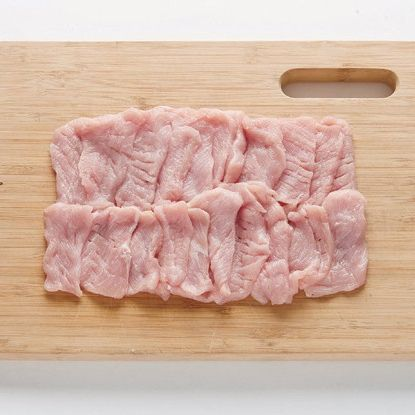
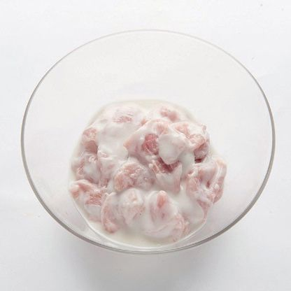
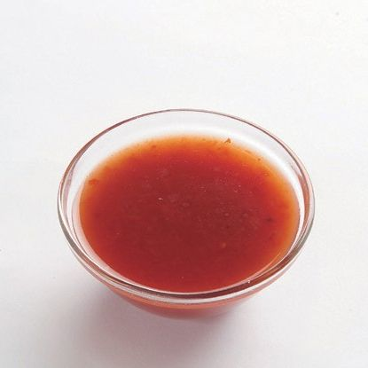
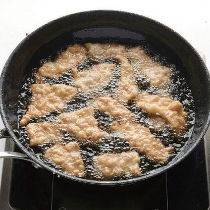
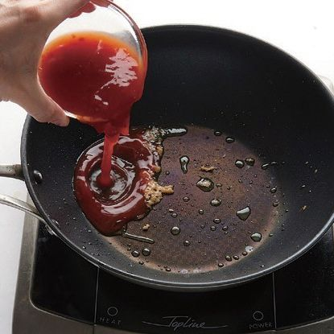

-

돼지고기 등심은 4x5cm 크기로 0.5cm 두께로 썰어 칼등으로 살짝 두들겨 준비해 주세요.
-

분량의 재료를 골고루 섞어서 튀김 반죽을 만들어 순서 1의 돼지고기를 버무려 주세요.
-

분량의 재료를 골고루 섞어서 소스를 만들어 주세요.
-

순서 2의 튀김 반죽을 입힌 돼지고기를 가열한 기름에 하나씩 넣어 바삭하게 튀겨 주세요.
-

뜨거운 팬에 식용유을 두르고 다진 생강을 볶아 향을 내준 뒤 순서 3의 소스를 넣고 끓여주세요.
-
순서 5에 바삭하게 튀긴 돼지고기를 넣고 버무려 완성해 주세요..